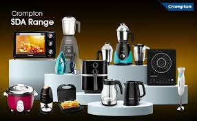
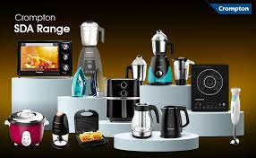

Clothing (also known as clothes, garments, dress, apparel, or attire) is any item worn on the body. Typically, clothing is made of fabrics or textiles, but over time it has included garments made from animal skin and other thin sheets of materials and natural products found in the environment, put together. The wearing of clothing is mostly restricted to human beings and is a feature of all human.
- Men's ware
- Women's ware
- Kid's ware
 
